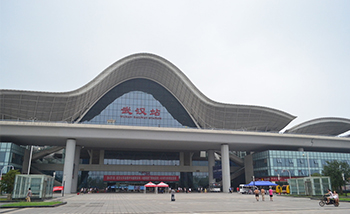

武汉火车站→长江职业学院

南校区
地铁:
轨道交通四号线→轨道交通二号线→长职南校区
起点：武汉火车站
步行13米至地铁四号线武汉火车站
从武汉火车站上车至楚河汉街（10站）下车（C口出）末班车 22:30
步行252米至中北路地铁楚河汉街站公交站
乘坐583路公交，至民族大道时间广场（14站）下车 末班车 21:30
步行242米即到。
公交：
513路→738路→长职南校区
起点：武汉火车站
步行222米至武汉火车站公交站
乘坐513路公交，至珞喻路关山口（27路下车 末班车 20:00
换乘738路公交，至雄楚大道民族大道口（4站下车 末班车 21:15
下车即到。
东校区
地铁：
轨道交通四号线→轨道交通二号线→788路→长职东校区
起点：武汉火车站
步行13米至地铁四号线武汉火车站
从武汉火车站上车至中南路（2站）末班车 22:30
站内换乘地铁二号线至光谷广场站（6站）下车（C口出）末班车 22:30
步行430米至民族大道光谷广场公交站
换乘788路公交，至光谷一路流芳园路（12站）下车 末班车 21：30
步行809米即到.
公交：
513路→788路→长职东校区
起点：武汉火车站
步行222米至武汉火车站公交站
乘坐513路公交至鲁磨路光谷广场（29站）下车 末班车 20:00
换乘788路公交，至光谷一路流芳园路（13站）下车 末班车 21:30
步行809米即到。
西校区
地铁：
轨道交通四号线→777路→长职西校区
起点：武汉火车站
步行13米至地铁四号线武汉火车站
从武汉火车站上车至武昌火车站（14站）下车（A口出）末班车 22:30
步行216米至中山路武昌火车站公交站
换乘777路公交，至南湖大道张吴湾（16站）下车 末班车 21:00
步行1.1公里即到。
公交：
540路→320路→长职西校区
起点：武汉火车站
步行226米至武汉火车站公交站
乘坐540路公交至文安路丁字桥路口（31站）下车 末班车 21:00
换乘320路公交，至书城路文祥路（13站）下车 末班车 21:40
步行1.2公里即到。